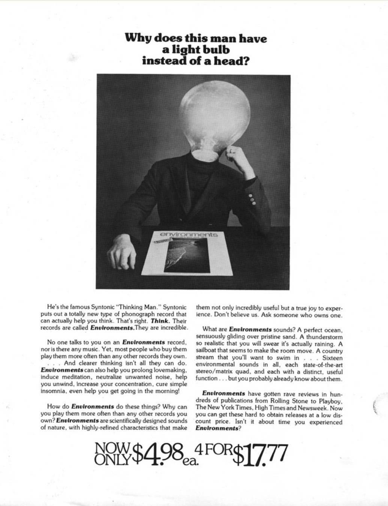

The Man Who Recorded, Tamed, and then Sold Nature Sounds to America
by CARA GIAMO
In the 1970s, you could buy a pet rock, or a lava lamp. People had even pawned the Brooklyn Bridge a few times. But no one sold the ocean until Irv Teibel.
If you flip on a waterfall to fall asleep, if you keep rainymood.com in your bookmarks, if you associate well-being with the sound of streams and crickets or wonder why the beach never quite sounds as tranquil as you imagine, it’s because of Teibel. New York’s least likely media mogul was the mastermind behind Environments, a series of records he swore were “The Future of Music.” From 1969 to 1979, he took the best parts of nature, turned them up to 11, engraved them on 12-inch records, and sold them back to us by the millions. He had a musician’s ear, an artist’s heart, and a salesman’s tongue, and his work lives on in yoga studios, Skymall catalogs, and the sea-blue eyes of Brian Eno. If you haven’t heard of him, it’s only because he designed his own legacy to be invisible.
This is the story of a man who tried to capture the world, and really wanted us to listen.
As he got older, he zigzagged between disciplines and cities, picking up new modes of apprehension and expression: applied science at Rochester Institute of Technology, photography at the Art Center School in Los Angeles, public relations for the U.S. Army in Germany, publishing in London.
While stationed in Stuttgart in the 1950s, he dug into the local scene, studying electronic music and splicing tape with fellow musique concréte fans at a radio station. Promotion by day, sonic experiments by night—Teibel may not have known it, but he was building the toolkit he’d call on to make Environments.
The Counter-cultural Sea
By 1965, he was 27 years old and a jack-of-all-trades Manhattanite. He wrote and photographed for magazines like Look and Car and Driver, designed record jackets, and, after composer John Watts set up a synthesizer-based curriculum, studied electronic music at the New School for Social Research. In his spare time, he ogled fancy motorcycles, kept a running file of weird restaurants, and gigged around, helping his artist friends with their after-hours endeavors.
In short, like many young people in New York at the time, he was experimenting with the array of different creative tools available to the growing counterculture. Teibel’s own calling manifested in 1968, as he crewed on a shoot for a feature called Coming Attractions. The film, directed by Tony and Beverly Grant Conrad, was a fantastical, dream-soaked portrait of a drag queen named Francis Francine, facing an uncertain future while haunted by a “Spirit of Seductions Past.” That same year, the Conrads’ friend Walter de Maria released a disc called “Ocean Music,” featuring 20 minutes of crashing surf. Seeking a similar sense of sonic restlessness, the directors sent Teibel to Coney Island to record the waves off Brighton Beach.
Coming Attractions has a perfectly splotched 1960s art house pedigree: Tony Conrad played violin with what would become The Velvet Underground, and Beverly Grant headlined films by notorious performance artist Jack Smith. Francis Francine was a Warhol muse and and early genderqueer superstar, and Walter de Maria, already an up-and-coming sculptor, would soon make an indelible mark by filling a SoHo room with dirt. Even the Conrads’ marriage was somehow transgressive—they got together after working together on a Smith film in which she played a cobra woman and he played a mummy, a decision that caused Smith to disown them both for being too normal.
Thrown into this avant-garde who’s-who, Teibel could have been starstruck. Instead, out angling his microphone at the Brighton Beach surf, he got seastruck. Teibel’s roving mind craved a magnet—he loved his sleepless city, but it was no good for calming down, or corralling his thoughts. Even his hobbies had lost some luster. After years of manipulating noise for fun, he told a friend, he suddenly “found it hard to do anything pleasant” with it.
The sea sounds, though, were easy to love. Taken back to his Manhattan apartment and looped on repeat, they were even better. They quieted his mind. They helped him concentrate. They did something plain old human music couldn’t.
"The Perfect Ocean"
Soon after his Brighton Beach breakthrough, Teibel went for his regular chess game with a friend who worked in psychoacoustics, studying how sound affects the nervous system. As Teibel later related in computer magazine Digital Deli, this friend happened to bring up Hermann Ludwig Ferdinand von Helmholtz, a 19th-century German polymath who was convinced that natural sounds—even those as mundane as the wind, or the sea—might have “great psychological benefits, if only some means of accurate reproduction could be found.
”A century after this speculation, such means were now old hat. Teibel had just used them to bottle the ocean. “This casual mention of Helmholtz’ musings,” he wrote, “triggered a ‘what-if’ that was to have a profound effect on the next decade of my life.” He later told his daughter that it was like “waking up and being on top of an elephant.”
Teibel informed the Conrads that he wanted to start a record label. When they declined to go in on it, he left their project and went back to the beach himself. But making the sounds he recorded match the sea in his head was no easy feat, and required a then-rare collaborator—a computer.
Compared to music, or spoken conversation, the ocean is “noisy,” full of surprising tones and frequencies your average microphone doesn’t bother to preserve. And though the human ear is used to filling in gaps left by a choppy radio or telephone, Teibel found it to be much less forgiving when taking in natural sounds. “Into this maelstrom of inaccuracy I plunged with my trusty Uher portable stereo reel-to-reel tape recorder and a tangle of microphones and cables,” he wrote. “Nearly a year later I had produced a hundred stereo recordings not one of which actually sounded, to my mind’s eye, like the ocean I wanted to hear.”
Luckily for him, Teibel’s perfectionism was matched by his roster of useful friends. One in particular, Louis Gerstman, was working at Bell Labs, developing computers that could recite Hamlet and sing children’s songs in order to better understand speech. Gerstman had access to an IBM 360, a state-of-the-art machine in 1968. “Bring your ocean to me, and I’ll save you grief,” he told Teibel.
Teibel and Gerstman fed the original Brighton Beach tape into the computer and, after a night of parameter tweaks and range adjustments, came up with something promising—“a beautiful, tranquil ocean sound I had never heard before,” Teibel wrote.
The next night, they went at it again, adding delays and overdubs. When they finally had what they wanted, they realized it would take eight hours to record their 30-minute sea to playback tape. “We set everything up, punched the record button, and spent the rest of the night drinking coffee and munching greasy hamburgers at an all-night diner,” Teibel wrote. When they went in at dawn to play it back, they found exactly what he had wanted: “A ‘perfect’ ocean in completely convincing stereo.”
Pick up a copy of Environments 1, and you don’t see any of its backstory. There’s no sign of the all-nighters, the stacks of failed beach tapes, or the greasy burgers; no credits or place designations. In fact, Teibel’s name doesn’t appear once.
What you do see are promises, and lots of them. The front boasts the track titles, all-caps beneath a long view of a foamy wave:
“Side 1: THE PSYCHOLOGICALLY ULTIMATE SEASHORE.
Side 2: OPTIMUM AVIARY.”
Open the fold, and you get four columns of instructional text, alternately self-assured (“you will probably want to leave the record playing all the time”) and overbearing (if such constant use grimes things up, “use tepid water and mild dishwashing detergent to rinse the record.”). The back fairly shouts with anonymous user reviews in bright colors:
“HAVEN’T FELT SO GOOD SINCE MY VACATION”
“cured my insomnia!”
“BETTER THAN A TRANQUILIZER.”
At the bottom, in a curlicue font, is the only mark of authorship:
"“Produced by Syntonic Research, Inc.”
After hammering out the kinks in the seashore, Teibel took his reel-to-reel to the Bronx Zoo and set it up near the birdcage. Voila: “Optimum Aviary.” But even with a set of perfect recordings, Teibel was only halfway done. He wanted to bring this discovery to the people; to share with his fellow stressed-out masses the natural cure he’d found within their city’s limits. And an hour of souped-up surf and enhanced chirps wasn’t going to sell itself.
So Teibel reached back into his experience as an ad man, with the Army press office and the London publishing house. Inspired by the word “Xerox,” he brainstormed a long list of intimidating, inscrutable names before settling on one: “Syntonic Research.” He holed up again and wrote sheet after sheet of copy, laying out the lab’s supposed findings: “If used while reading, comprehension and reading speed improve noticeably. If used at mealtime, appetites improve. Insomniacs fall asleep without the aid of drugs. Hypertension vanishes. Student’s marks improve. It’s [sic] effect on the esthetics of lovemaking is truly remarkable.”
As far as anyone can tell, save for the continued services of Gertsman and a Columbia University biologist named Louis Katz, Syntonic Research employed a distinct lack of researchers. There were no white-coated acousticians decanting different sounds, or stressed-out volunteers drinking them up. Odds are good that the unattributed testimonials could all have rightly been signed “Teibel.”
This is not to say such labs didn’t exist. The mid-20th century saw a revolution in indoor noise design; improvements in HVAC systems had helped with climate control, but had also eliminated the ever-present hum that, it turned out, had been keeping an increasingly corporate America sane. Acousticians all over the country were frantically developing new types of super-specific white noise, trying to keep open-plan office workers from invading each other’s privacy with every phone call.
Meanwhile, the 1970s brought us Earth Day, a celebration of environmentalism concentrated chiefly in urban centers. Techhead hippies were reading the Whole Earth Catalogue, flipping from essays about cybernetics to treatises on how to best hand-plow a field. Though plenty of other people had recorded rainforests and jungles, for folk collections or for posterity, no one had thought to smooth them down for general indoor use.
The back of Environments 5: “Ultimate Heartbeat/Wind in the Trees,” featuring more rave reviews.

When he did, Teibel was rewarded by the choosiest of trendsetters: college kids. As Teibel later told the New York Times, early test pressings displayed at the Harvard Coop outsold the Beatles at exam time, as students used recorded surf to drown out noisy neighbors. Bolstered by this early success, in the summer of 1970, Atlantic Records & Tapes bought the rights, expanded distribution, and embarked on a small marketing campaign. “This album contains no music, no singing, no spoken words,” one ad begins, before this surprise kicker: “…And it’s one of the Hottest-sellers in the Underground!”
In this way, Teibel gained not only a larger audience, but a posse of test subjects, and life began to imitate art—or at least to copy copy. He sent test pressings to a select audience and solicited their feedback, and seeded record sleeves with mail-in questionnaires to gauge his audience’s wants and needs. He heard back from subjects as varied as overworked helicopter pilots and clergy seeking background sounds for sermons, and read their responses in his new penthouse office in the Flatiron Building. Software designers used the records as mind-detanglers, and psychiatrists played them in waiting rooms. Inevitably, his records began to replace nature itself: Retirees soaked their Florida condos in his fake ocean, to avoid opening windows and letting in the real damp.
In the subsequent decade, Teibel followed his fans’ requests far and near. After noticing the importance of proper sound sequencing—frogs, for instance, will always call-and-respond from alternate sides of a lake—he stopped looping. He’d record in his chosen spot for hours, whittle the tape down, and pump it up. Environments 4: “Ultimate Thunderstorm” sounds like a tree-shaking deluge, but was captured from the bathroom of his Manhattan apartment. For environments 6: “Dawn and Dusk at Okefenokee Swamp,” he took an airboat to the Georgia-Florida border, accompanied only by a microphone and his Scottish terrier, Farfel, who was so well-trained he kept silent even when menaced by an alligator.
An image from an advertisement for Environments, c. 1970s. COURTESY SYNTONIC RECORDS
Occasionally, Teibel ventured into more human territory. He recorded chanting singers, and a Central Park Be-In. Some records were made to solve a special challenge—according to its jacket, environments 5: “Ultimate Heartbeat” aimed to “slow down and synchronize the act of lovemaking” (though, as the New York Times reported, “there is scarcely an environments record side that someone hasn’t reported using to make love to”). Others found niche audiences: played in an Arizona barracks, number 11, “Alpine Blizzard” supposedly cooled off soldiers, and the thunderstorm was used to train skittish dogs. “Today, we sell to everybody from precociously intelligent 13-year-olds to grandmothers who use our records for knitting,” Teibel told the Times in 1975, just after the release of environments 8: “Wood-Masted Sailboat”/“A Country Stream.”
Journalists, coaxed into participation as part of their coverage, provide firsthand accounts of the listening experience. “There is an over-all peaceful, detached effect,” the New York Times reporter writes in 1975. “While my eyes are focused on a sheet of typing paper, I seem to be off somewhere else.” A New York magazine writer tasked with finding urban sleep solutions compares it favorably with clinics and water beds. LIFE’s reviewer takes things one step further: “Cheaper than booze, safer than pot, less monotonous than the hum of an air conditioner.” Indeed, the only non-fan may have been Lester Bangs, who included environments on a list of “Most Ridiculous Records of the 70s,” ranked slightly higher than a rock opera called “California 99” and slightly lower than “The Best of Marcel Marceau”—though even he allows that “playing the surf noises on the first record absorbs the traffic noises and crime-of-violence shrieks penetrating apartment walls in New York City.”
Between 1969 and 1979, Teibel released 11 environments LPs. Most sold well, though none approached the success of “The Psychologically Ultimate Seashore,” which moved enough units that he never had to work again. His records couldn’t go out of style, Teibel figured, because they were never in style in the first place. They were functional items—“like a bar of soap,” he said.
Throughout all this success, Teibel himself stayed in the background. In the early 1980s, he got married, moved to Austin, Texas and dove back into photography, retouching photos on his very own Apple II and sharing them with friends and neighbors. He had daughters, and then granddaughters. environments was a fixture in their bedtimes—“he would use Ultimate Thunderstorm, and Slow Ocean, even the crickets,” his daughter Jennifer told the BBC in 2012. He played them for himself, too.
When Teibel died in 2010, at age 72, his family made him an online tribute page. Thus far, it has gathered five quiet testimonials from acquaintances and strangers. “I never realized it was ONE man that did this,” wrote a fan named Roberta, who then told of tricking her mother with “Ultimate Thunderstorm:” “She was completely convinced that it was going to downpour and ran around the apartment closing windows… when she went to the back door to wait for the rain to begin she was puzzled by the sunshine.”
Humans Don’t Like Silence
Nearly half a century after its first release, “The Psychologically Ultimate Seashore” seems a little washed up. The environments series has been out of print for years, its spot at the Harvard Coop filled by neck pillows and disposable earplugs. Teibel’s Syntonic Records homepage, only accessible through the Internet Archive, is a fossil of the early web, with its grainy waterfall image and acid-pink background. Dog-eared copies in used record stores look like what they are: 70s relics, bubbling over with dead slang and trippy fonts.
Some of the series’ most dedicated fans, though, maintain that there’s more to the story. Hidden in the seashore’s hiss, they say, run several of the currents shaping contemporary life.
First of all, as Teibel sinks into something like obscurity, science is finally catching up. Over the past couple of decades, researchers have been trying to pin down whether and how well a good dose of outdoor audio actually works for the mind—and so far, evidence suggests there’s something to it. “There’s a lot of discussion about different types of music, and what is calming for one person may not be for for another person,” says Jonas Braasch, an acoustician at Rensselaer Polytechnic Institute. “But nature sounds—people seem to agree that they all like it.”
Last year, Braasch put some study subjects through a rigorous cognitive task involving number identification. Then he gave them a break, during which he treated them to one of three auditory experiences: nature sounds, a loud industrial woodshop, or nothing at all. When he made them repeat the same task, those who had spent time in sonic nature improved the most.
Environments 3, Dusk At New Hope, Pennsylvania! (NIGHT SOUNDS)
Other studies have uncovered measurable physiological effects. Upcoming research from the University of North Florida suggests that listening to ocean waves can unclench muscles and slow down heart rates after just seven minutes, while Mozart and silence do nothing. In a 2003 study, patients undergoing bronchoscopies reported less pain and anxiety reported less pain and anxiety when the procedure had a woodsy soundtrack. Some scientists have even suggested piping birdsong into urban environments, in order to boost general morale and overpower less pleasant sounds, like traffic.
Data like this can back up hunches, but much of the “why” is still left to speculation. According to environmental psychologist Eleanor Ratcliffe, nature sounds may have certain inherently pleasant qualities, like repetition and slow rhythm, that help us tune out other distractions without demanding our attention themselves. Music, even when it strives to replicate these qualities, is too culturally specific to achieve this across the board.
Others think natural sounds evoke a sense of safety rooted in our prehistoric days, when burbling brooks and talkative birds were a sign that all was well at home. “Humans don’t like silence very much,” Braasch says. “Usually if it becomes very quiet, that’s a good indicator that a predator is around. But if animals and birds are making noise, you have a safe environment.” Even in contemporary cities, where lions and wolves are far less menacing than things like stress and sleeplessness, this old message still comes through—and, as Teibel so quickly realized, sound can help us fight those new threats, too.
A selection of Environments albums, plus one other Teibel venture, “The Erickson Tapes.” COURTESY JONATHAN EEN NEWTON
The Forgotten Godfather
Teibel’s cultural reputation is quietly growing alongside his scientific one, thanks to historians and music buffs like Jonathan Een Newton.Een Newton, like most new fans, first encountered environments by accident: While nurturing an interest in environmental folk recordings, he happened upon a brief mention of Teibel in a magazine sidebar. This inspired an info-seeking blog post, which led to a phone call from Teibel’s daughter Jennifer. Barely a year later, he has found himself on the inside, one of a small group in charge of the Syntonic Research legacy.
It is, in his eyes, a major one. Teibel is a kind of auditory missing link. “Before, there’s Muzak, there’s mood music, and there’s sound effects records. Afterwards, there’s new age music, ambient music, Brian Eno… and he’s right in between,” Een Newton says. “He’s a forgotten godfather.”
Other devotees place him at the top of different tradition. Mack Hagood, an assistant professor of media studies at Miami University, is writing a history of what he calls “orphic media”—“sound technologies that people use to create a comfortable sense of space for themselves.” In graduate school, he began collecting examples of what would become his study subject: white noise machines, noise-cancelling headphones, televisions left on to comfort a person alone in the house. “And then I thought, ‘oh my gosh, Environments, right!’” he recalls. “These old friendly records completely fit the bill.”
These days, a large swath of Teibel’s legacy survives in the form of waterfall machines from Sharper Image, or dozens of rainforest-themed chill-out apps. But, Hagood points out, some of it has been lost, too, cut off by our current age’s narrow bandwidth of values. Now, he says, “it’s all about sleep and concentration”—the kind of attention-control that helps you work harder, or relax better so as to work harder later. Scientific studies of nature sounds bear this out in their very construction, by focusing on increasing productivity or decreasing workplace stress.
With Environments, Teibel certainly offers up better sleep and peak efficiency. But he also swears you’ll trip with your friends, have better sex, and tap into some kind of blissed-out sky-high plane. His process, with its dual focus on realness and improvement, represents the kind of achievable idealism he hoped his records could engender in others. Tune in, and you could turn on, drop out, or shape up. “These records, they look super corny and silly,” Hagood says. “But I think we need to take them more seriously.”
Irv Teibel in his office in the Flatiron Building, c. 1975. COURTESY SYNTONIC RECORDS
The Music of the Future
How do Teibel’s records sound now, fifty years past their commercial prime? Environments 1: “The Psychologically Ultimate Seashore” is available on Discogsfor a few bucks. In our maximally efficient times, it’s very easy to order one and follow the near-medicinal playback instructions. At regular speed and volume, the disc is crisp enough to drown out car horns, roommates, and home screen notifications. It seems to unroll forever. An occasional foghorn punctuates, far off. There’s nothing particularly utopian about it, but nothing particularly retro, either.
Eventually, all the music of the future becomes the music of the past, even if it was never music to begin with. A phrase like “Totally New Concepts” starts reading as parody. We begin using tranquilizers again after all. What was novel goes in the novelty bin.
This aging just heightens a perpetual truth: There’s no such thing as a platonic ocean, in 2016 or 1969. The Seashore wasn’t ultimate at all—it was one man’s inner landscape, spliced and looped into submission and prescribed to the whole world.